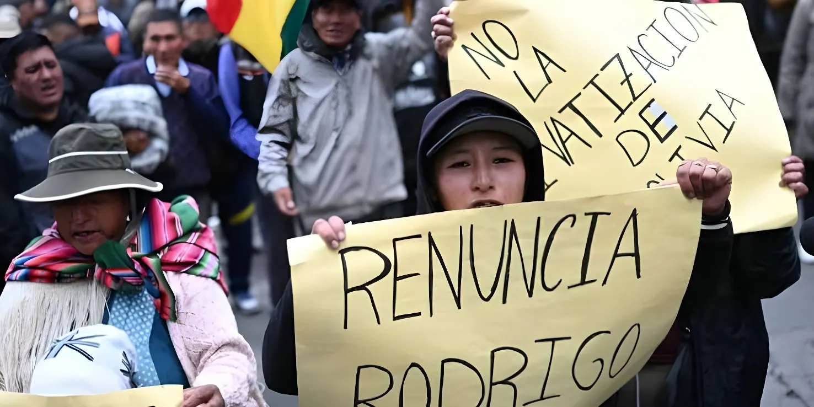

Neuf mois après son investiture, à peine deux mois après avoir maté la révolte populaire de mai-juin, Rodrigo Paz affronte une crise d'une tout autre nature : celle de son propre camp. Un conseiller argentin incarcéré pour tentative de féminicide et soupçonné d'avoir organisé des affaires occultes au sommet de l'État, un ministre de l'Économie limogé après un scandale automobile, un vice-président en rupture ouverte, un ex-président toujours détenu, un scandale d'essence frelatée qui remonte jusqu'au gouvernement : en quelques semaines, l'exécutif bolivien s'est retrouvé cerné par les affaires.
Investi le 8 novembre 2025 sans majorité absolue au Parlement, Rodrigo Paz avait déjà dû affronter, en mai et juin 2026, la plus grave crise sociale que la Bolivie ait connue depuis des décennies — grève illimitée de la Centrale ouvrière bolivienne, barrages routiers, dynamite des mineurs, marche d'Evo Morales sur La Paz. Pour y mettre fin, le Parlement avait adopté le 8 juin 2026 une loi encadrant les états d'exception, puis Paz avait décrété l'état d'exception sur tout le territoire le 20 juin, après plus de cinquante jours de blocages, dénonçant une « stratégie organisée de déstabilisation » qu'il a qualifiée de tentative de « coup d'État depuis le narcoterrorisme ».
Mais l'apaisement relatif de la rue, cet été, n'a pas mis fin à la crise : il en a révélé une seconde, plus profonde, qui touche cette fois directement l'intégrité de l'exécutif. En l'espace de quelques semaines, en juillet et août 2026, une succession d'arrestations, de scandales et de ruptures politiques a fragilisé un gouvernement déjà en sursis.
Au cœur de la tourmente : Fernando Cerimedo, consultant politique argentin, cofondateur du média La Derecha Diario et artisan de la campagne numérique qui a porté Javier Milei à la présidence argentine. Devenu conseiller de campagne de Rodrigo Paz puis, selon plusieurs témoignages, une figure influente et permanente de son entourage, il se présentait lui-même comme « asesor principal » du chef de l'État sur des cartes de visite frappées du sceau de la présidence — retrouvées lors d'une perquisition à son domicile de La Paz, où la police a également saisi des liasses de billets dissimulées, un véhicule officiel et un téléphone satellite.
Le 17 août 2026, son ex-compagne, l'avocate Nadia Beller — ancienne candidate du MAS —, est attirée par un message anonyme dans un hôtel de Santa Cruz sous prétexte de recevoir des preuves compromettant Evo Morales. Deux hommes déguisés en livreurs lui tirent trois balles avant de s'enfuir avec son téléphone et son sac. Enceinte de quatre semaines, elle survit à l'attaque. Le lendemain, Fernando Cerimedo est arrêté à l'aéroport de Viru Viru, à Santa Cruz, alors qu'il s'apprêtait à embarquer sur un vol. Un juge ordonne 180 jours de détention préventive et son transfert à la prison de Palmasola.
L'ex-président Luis Arce est arrêté à La Paz dans le cadre de l'affaire du Fonds indigène, soupçonné de détournements de fonds publics destinés aux communautés indigènes durant son mandat.
Le Parlement adopte la loi encadrant les états d'exception ; Paz décrète l'état d'exception sur tout le territoire après plus de cinquante jours de blocages.
L'ex-ministre des Hydrocarbures Mauricio Medinaceli est arrêté dans l'affaire de la « gasolina basura », l'essence frelatée ayant endommagé des dizaines de milliers de véhicules.
Le décret 5676 fait grimper de 84 % le prix du diesel pour les « gros consommateurs », provoquant la colère des agriculteurs et des transporteurs.
Nadia Beller est visée par une tentative d'assassinat à Santa Cruz. Son ex-compagnon, le conseiller présidentiel Fernando Cerimedo, est arrêté le lendemain.
Paz limoge son ministre de l'Économie José Gabriel Espinoza, visé par une enquête pour faux documents. Le vice-président Edmand Lara rompt publiquement avec le président.
Pendant des mois, de l'essence de mauvaise qualité, importée sans contrôles suffisants, a endommagé les moteurs de véhicules et de machines agricoles à travers tout le pays — un scandale qui a directement nourri la colère populaire du printemps 2026. Une commission d'enquête de la Chambre des députés a conclu que l'approvisionnement continu en carburant avait été systématiquement privilégié aux contrôles de qualité et de sécurité technique, par le biais de décrets d'importation d'urgence sans exigences minimales — une pratique qui traverse deux gouvernements successifs, celui de Luis Arce puis celui de Rodrigo Paz.
Le rapport parlementaire met en cause l'ex-ministre des Hydrocarbures de Paz, Mauricio Medinaceli, destitué en avril puis arrêté fin juillet 2026, mais aussi son prédécesseur sous Arce, Alejandro Gallardo, ainsi que les anciens présidents de l'entreprise publique YPFB, Armin Dorgathen et Yussef Akly. Medinaceli, aujourd'hui assigné à résidence, est poursuivi pour « manquement à ses devoirs » et « conduite anti-économique ».
Le 21 août 2026, Rodrigo Paz est contraint de limoger son ministre de l'Économie, José Gabriel Espinoza, architecte du virage pro-marché de son gouvernement, quelques jours après un vote du Congrès exigeant son départ. Les parlementaires s'appuient sur un scandale entourant l'achat par le ministre d'un véhicule de luxe, une Audi Q4, pour 5 000 dollars — un prix très inférieur à sa valeur de marché —, et sur son absence à une audition parlementaire consacrée à l'économie, alors que l'inflation et les pénuries de carburant et de devises persistent. Le Parquet ouvre une enquête pour faux documents et déclaration de revenus mensongère ; Espinoza invoque une erreur administrative et nie toute irrégularité.
Paz avait d'abord dénoncé le vote du Congrès comme inconstitutionnel et assuré que son ministre resterait en poste, avant de céder — signe de sa fragilité parlementaire après la rupture, quelques jours plus tôt, de son allié Unité nationale, un parti clé de centre-droit dans sa coalition.
« Je l'ai vu, Fernando Cerimedo, donner des ordres et des instructions aux ministres. »
— Edmand Lara, vice-président de Bolivie, 22 août 2026L'affaire Cerimedo approfondit une rupture déjà ancienne entre Paz et son vice-président, Edmand Lara, ex-capitaine de police dont la popularité avait largement contribué à la victoire électorale du binôme. Le 22 août, Lara affirme publiquement avoir vu Cerimedo donner des instructions à des ministres et met Paz au défi d'un face-à-face pour démentir que l'Argentin ait été son conseiller. Le porte-parole présidentiel rétorque que Cerimedo n'a jamais été qu'un « collaborateur proche » pendant la campagne, sans faire partie de la structure de l'État. Les tensions entre les deux hommes remontent en réalité aux premières semaines du mandat : dès décembre 2025, Lara se déclarait « opposition constructive » à son propre gouvernement, accusant Paz de « gouverner pour les riches » et d'être tenu à l'écart des réunions de cabinet.
| Indicateur | Valeur (août 2026) |
|---|---|
| Ministres d'origine encore en poste | 6 sur 15 |
| Véhicules endommagés (gasolina adulterada) | +66 000 |
| Détention préventive de Cerimedo | 180 jours |
| Hausse du prix du diesel (16 août) | +84 % |
| Détention préventive de Luis Arce | prolongée à 5 mois (juin 2026) |
Des analystes spécialisés dans la région, dont le Center for Strategic and International Studies (CSIS), estiment que Paz devrait vraisemblablement surmonter la crise actuelle, mais qu'il pourrait être contraint à la démission avant la fin de l'année 2026 sous l'effet conjugué de la pression politique et économique. Le président cumule en effet une fragilité institutionnelle — absence de majorité, perte d'un allié parlementaire central — avec des scandales de corruption touchant désormais son entourage direct, tandis que les pénuries de diesel et l'inflation continuent de peser sur le quotidien des Boliviens, malgré l'accalmie relative des barrages routiers depuis juin.
Après des semaines de dynamite et de barrages, la bataille s'est déplacée à l'intérieur même des institutions : ministères, parquets, palais présidentiel. Ce déplacement change la nature de l'épreuve que traverse Rodrigo Paz. Il ne s'agit plus seulement de subventions ou de pouvoir d'achat, mais de l'intégrité de l'appareil d'État qu'il avait promis d'assainir après vingt ans de pouvoir du MAS. Sa survie politique dépendra désormais moins de la rue que de sa capacité à tenir un exécutif qui se fissure de l'intérieur — entre un vice-président en rébellion ouverte, des ministres qui tombent les uns après les autres et un entourage rattrapé par la justice.
Nueve meses después de su investidura, apenas dos meses después de contener la revuelta popular de mayo-junio, Rodrigo Paz enfrenta una crisis de otra naturaleza: la de su propio entorno. Un consultor argentino encarcelado por tentativa de feminicidio y sospechoso de haber organizado negocios ocultos en la cúpula del Estado, un ministro de Economía destituido tras un escándalo automovilístico, un vicepresidente en ruptura abierta, un expresidente aún detenido, un escándalo de gasolina adulterada que salpica al gobierno: en pocas semanas, el Ejecutivo boliviano se ha visto cercado por los casos judiciales.
Investido el 8 de noviembre de 2025 sin mayoría absoluta en el Parlamento, Rodrigo Paz ya había tenido que afrontar, en mayo y junio de 2026, la crisis social más grave que Bolivia ha vivido en décadas —huelga indefinida de la Central Obrera Boliviana, bloqueos de carreteras, dinamita de los mineros, marcha de Evo Morales hacia La Paz. Para ponerle fin, el Parlamento aprobó el 8 de junio de 2026 una ley que regula los estados de excepción, y Paz decretó el estado de excepción en todo el territorio el 20 de junio, tras más de cincuenta días de bloqueos, denunciando una «estrategia organizada de desestabilización» que calificó de intento de «golpe de Estado desde el narcoterrorismo».
Pero la relativa calma en las calles durante el verano austral no puso fin a la crisis: reveló una segunda, más profunda, que afecta esta vez directamente a la integridad del Ejecutivo. En pocas semanas, en julio y agosto de 2026, una sucesión de arrestos, escándalos y rupturas políticas ha debilitado a un gobierno ya en cuenta regresiva.
En el centro de la tormenta: Fernando Cerimedo, consultor político argentino, cofundador del medio La Derecha Diario y artífice de la campaña digital que llevó a Javier Milei a la presidencia argentina. Convertido en asesor de campaña de Rodrigo Paz y luego, según varios testimonios, en una figura influyente y permanente de su entorno, él mismo se presentaba como «asesor principal» del jefe de Estado en tarjetas de presentación con el sello de la Presidencia —halladas durante un allanamiento a su domicilio en La Paz, donde la policía también incautó fajos de billetes ocultos, un vehículo oficial y un teléfono satelital.
El 17 de agosto de 2026, su expareja, la abogada Nadia Beller —excandidata del MAS—, es citada mediante un mensaje anónimo a un hotel de Santa Cruz con la promesa de recibir pruebas comprometedoras contra Evo Morales. Dos hombres disfrazados de repartidores le disparan tres veces antes de huir con su celular y su cartera. Embarazada de cuatro semanas, sobrevive al ataque. Al día siguiente, Fernando Cerimedo es detenido en el aeropuerto de Viru Viru, en Santa Cruz, cuando estaba a punto de abordar un vuelo. Un juez ordena 180 días de detención preventiva y su traslado al penal de Palmasola.
El expresidente Luis Arce es detenido en La Paz en el marco del caso Fondo Indígena, sospechoso de desvíos de fondos públicos destinados a comunidades indígenas durante su mandato.
El Parlamento aprueba la ley que regula los estados de excepción; Paz decreta el estado de excepción en todo el territorio tras más de cincuenta días de bloqueos.
El exministro de Hidrocarburos Mauricio Medinaceli es detenido en el caso de la «gasolina basura», el combustible adulterado que dañó decenas de miles de vehículos.
El Decreto Supremo 5676 eleva en un 84 % el precio del diésel para los «grandes consumidores», provocando el rechazo de agricultores y transportistas.
Nadia Beller sufre un intento de asesinato en Santa Cruz. Su expareja, el asesor presidencial Fernando Cerimedo, es detenido al día siguiente.
Paz destituye a su ministro de Economía José Gabriel Espinoza, investigado por falsificación de documentos. El vicepresidente Edmand Lara rompe públicamente con el presidente.
Durante meses, gasolina de mala calidad, importada sin controles suficientes, dañó los motores de vehículos y maquinaria agrícola en todo el país —un escándalo que alimentó directamente la ira popular de la primavera de 2026. Una comisión investigadora de la Cámara de Diputados concluyó que el abastecimiento continuo de combustible fue priorizado sistemáticamente por encima de los controles de calidad y seguridad técnica, mediante decretos de importación de urgencia sin requisitos mínimos —una práctica que atraviesa dos gobiernos sucesivos, el de Luis Arce y el de Rodrigo Paz.
El informe parlamentario señala al exministro de Hidrocarburos de Paz, Mauricio Medinaceli, destituido en abril y detenido a fines de julio de 2026, pero también a su antecesor bajo Arce, Alejandro Gallardo, así como a los expresidentes de la petrolera estatal YPFB, Armin Dorgathen y Yussef Akly. Medinaceli, hoy con detención domiciliaria, es procesado por «incumplimiento de deberes» y «conducta antieconómica».
El 21 de agosto de 2026, Rodrigo Paz se ve obligado a destituir a su ministro de Economía, José Gabriel Espinoza, arquitecto del giro promercado de su gobierno, días después de que el Congreso votara para forzar su salida. Los legisladores se apoyan en un escándalo en torno a la compra por el ministro de un vehículo de lujo, un Audi Q4, por 5 000 dólares —muy por debajo de su valor de mercado—, y en su ausencia a una audiencia parlamentaria sobre la economía, en un contexto de inflación persistente y escasez de combustible y divisas. La Fiscalía abre una investigación por falsificación de documentos y declaración de ingresos falsa; Espinoza atribuye la discrepancia a un error administrativo y niega cualquier irregularidad.
Paz había calificado inicialmente el voto del Congreso de inconstitucional y asegurado que su ministro permanecería en el cargo, antes de ceder —señal de su fragilidad parlamentaria tras la ruptura, días antes, de su aliado Unidad Nacional, un partido clave de centroderecha en su coalición.
« Le he visto a Fernando Cerimedo dando órdenes y dando instrucciones a los ministros. »
— Edmand Lara, vicepresidente de Bolivia, 22 de agosto de 2026El caso Cerimedo profundiza una ruptura ya antigua entre Paz y su vicepresidente, Edmand Lara, expolicía cuya popularidad contribuyó en gran medida a la victoria electoral del binomio. El 22 de agosto, Lara afirma públicamente haber visto a Cerimedo dar instrucciones a ministros y desafía a Paz a un careo para que desmienta que el argentino fue su asesor. El vocero presidencial responde que Cerimedo nunca fue más que un «colaborador cercano» durante la campaña, sin formar parte de la estructura del Estado. Las tensiones entre ambos se remontan en realidad a las primeras semanas del mandato: ya en diciembre de 2025, Lara se declaraba «oposición constructiva» a su propio gobierno, acusando a Paz de «gobernar para los ricos» y de mantenerlo al margen de las reuniones de gabinete.
| Indicador | Valor (agosto 2026) |
|---|---|
| Ministros originales aún en el cargo | 6 de 15 |
| Vehículos dañados (gasolina adulterada) | +66 000 |
| Detención preventiva de Cerimedo | 180 días |
| Alza del precio del diésel (16 ago.) | +84 % |
| Detención preventiva de Luis Arce | ampliada a 5 meses (jun. 2026) |
Analistas especializados en la región, entre ellos el Center for Strategic and International Studies (CSIS), estiman que Paz probablemente logrará superar la crisis actual, pero podría verse obligado a renunciar antes de finalizar 2026 por el efecto combinado de la presión política y económica. El presidente acumula, en efecto, una fragilidad institucional —ausencia de mayoría, pérdida de un aliado parlamentario central— con escándalos de corrupción que ahora tocan a su entorno directo, mientras la escasez de diésel y la inflación siguen pesando sobre la vida cotidiana de los bolivianos, pese a la relativa calma de los bloqueos desde junio.
Tras semanas de dinamita y bloqueos, la batalla se ha desplazado al interior mismo de las instituciones: ministerios, fiscalías, el propio palacio presidencial. Este desplazamiento cambia la naturaleza de la prueba que atraviesa Rodrigo Paz. Ya no se trata solo de subvenciones o poder adquisitivo, sino de la integridad del aparato estatal que había prometido sanear tras veinte años de poder del MAS. Su supervivencia política dependerá ahora menos de la calle que de su capacidad para sostener un Ejecutivo que se resquebraja desde dentro —entre un vicepresidente en rebelión abierta, ministros que caen uno tras otro y un entorno alcanzado por la justicia.